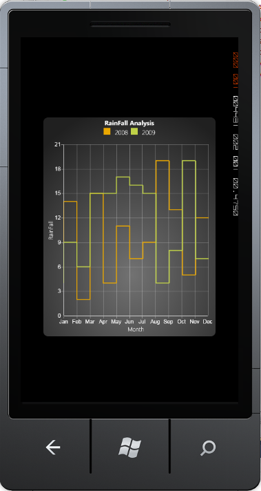

The Step Line chart is similar to Line chart. Step Line charts use horizontal and vertical lines to connect data points resulting in a step like progression. The Step Line chart supports all Line Chart features.
The following code example illustrates how to create a Step Line Chart.
|
[XAML]
<syncfusion:ChartSeries Type="StepLine" Label="2008" StrokeThickness="2" Interior="#FFEAA700" Name="Series1" DataSource="{StaticResource rainfallData}" BindingPathX="Month" BindingPathsY="Value1" /> <syncfusion:ChartSeries Type="StepLine" Label="2009" StrokeThickness="2" Interior="#FFBFD147" Name="Series2" DataSource="{StaticResource rainfallData}" BindingPathX="Month" BindingPathsY="Value2" /> |

Figure 25 : Step Line Chart